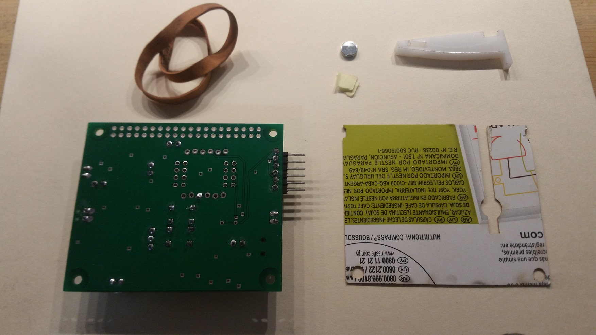
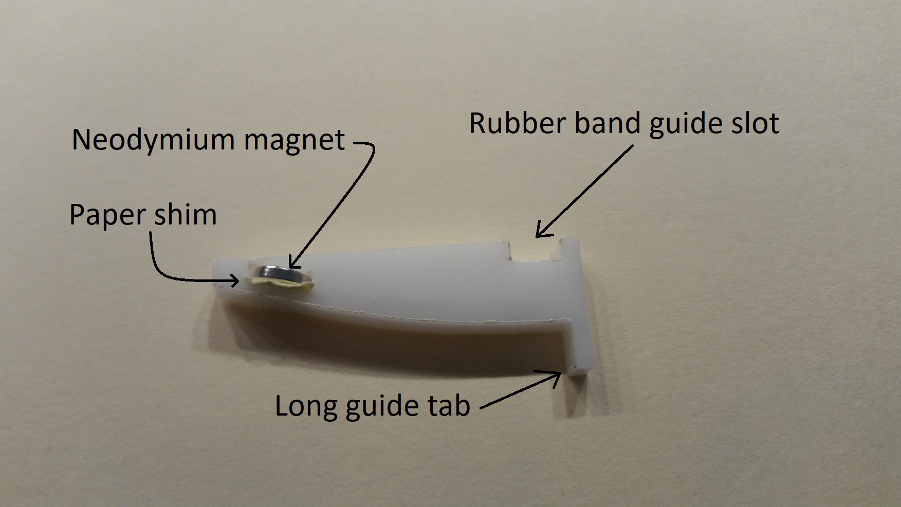

EENG 383
Lab 12 - In-lab activitiesRequirements
Working in teams of two, read through the following lab activity and perform all the actions prescribed. You do not need to document bullet items. Make a record of your response to numbered items and turn them in a single copy as your teams solution on Canvas using the instructions posted there. Include the names of both team members at the top of your solutions. Use complete English sentences when answering questions. If the answer to a question is a table or other piece of art (like an oscilloscope trace or a figure), then include a sentence explaining the piece of art. Only include your answers, do not include the question-text unless it is absolutely needed.Objective
To familiarize you with the MIDI protocol so that you can produce a specific note on specific instruments played at specific volume on a specific channel. Understand the behavior of the Hall effect sensor when your simple piano key is pressed.MIDI protocol
Right at the outset, this tutorial is not meant to be a comprehensive overview of MIDI, nor does it necessarily use MIDI terms. For the convenience of simplicity and expedience, I've modified some of the terms. I hope that this lab whets your appetite to learn more about MIDI so that you explore this protocol further and better understand the simplifications I've introduced.The MIDI protocol is a standard that connects devices to sound producing equipment. The protocol consists of a sequence of bytes that form a message.
Let's start in an obvious place, how to to get a MIDI device to play a note, called "pitch" in MIDI-speak. To play a pitch you need to send three bytes, the first is the start pitch command, the second is the pitch and the third is the velocity. Velocity is the force with which the pitch is played and roughly corresponds to the volume of the played pitch.
The start pitch command is 0x90
The pitch is a numerical value between 0x00 and 0x7F
The velocity is a numerical value between 0x00 and 0x7F
So if you wanted a MIDI device to start playing a mid-range pitch (0x3C) at a mid-range velocity (0x64) you would send: 0x90 0x3C 0x64
Once played, the pitch will take a while to fade out. If you want to play a pitch for a specific amount of time then after you start playing a pitch you will enter a delay loop for a specified amount of time, then the send the stop pitch command. The stop pitch command sends the MIDI device three bytes, the first is the stop pitch command, the second is the numerical code of an already started pitch, and the third is the volume of that pitch.
The stop pitch command is 0x80
The pitch is the numerical value of a started pitch
The volume is a numerical value of a started velocity
So if you wanted a MIDI device to stop playing the mid-range pitch (0x3C) that was playing with volume (0x64) you would send: 0x80 0x3C 0x64
Most MIDI devices are capable of playing many different instruments. To change an instrument you need to send the MIDI device two bytes, the first is the change instrument command and the second is the numerical code of the instrument. The change instrument command is 0xC0
The instrument is a numerical value between 0 and 0x7F
You can get a complete list of instruments here, but the table below lists a few. Note the MIDI standard has several different types of instruments for each class. For example in the guitar class you might have acoustic, electric, steel, 12-string, etc…
| Instrument | Code |
| Piano | 0-7 |
| Guitar | 24-31 |
| Percussive | 112-119 |
| Sound effects | 120-127 |
The MSB of a byte tells the destination MIDI device if the byte is data (MSB == 0) or control (MSB == 1). A control byte is split into an upper and lower half. The upper 4-bits are the command and the lower 4-bits are the channel number to apply the command to. For example, 0x90 means play a pitch on channel 1. 0x82 means stop playing a pitch on channel 3. 0xC1 means change the instrument associated with channel 2. Did you notice something weird about my numbering? Humans talk about channels 1-16, while the MIDI codes use 0-15. The reason is that musicians, like most people, start numbering things like channels at 1, while the computer engineers who designed MIDI started numbering channels at 0.
MIDI pitch 69 is A4 and has a frequency of 440 Hz. To see the entire list go to here. If you do know the relationship between the position of a note and its pitch, check out the Wikipedia page on Clef
- Write out the MIDI codes and durations for the first 12 notes of Happy
Birthday.
- Play the notes on channel 0,
- assume that MIDI channel 0 has already been configured to play the piano,
- play every pitch with volume 100 (you will need to convert this value to hexadecimal),
- stop every pitch that you start,
- Use "Eighth Note" (filled circle joined at the top to another eighth note), "Quarter Note" (filled circle with stick) or "Half Note" (open circle with stick) for duration,
- all MIDI values are assumed to be in hexadecimal.
Index Action MIDI Duration Action MIDI 1 Play C4 0x90 0x3C 0x64 Eighth Note Stop C4 0x80 0x3C 0x64 2 Stop C4 3 Play D4 Quarter Note 4 5 6 Half Note 7 8 9 10 11 12

I would encourage you to pluck this tune out on the piano located on the ground floor of Brown building (well when you have access to Brown building again). You may want to print or write-out the diagram that converts notes into piano keys using this link. Oh, and play all B notes as B flat; that's what the flat symbol (looks like a half heart) located on the left side of the staff means.
{kind=link}
Hall effect sensor
A Hall effect sensor is a device that produces a voltage in the presence of a magnetic field. A variety of different types of sensors use this effect to produce an output that indicates the presence of a magnetic field. Your development board comes equipped with a Texas Instruments DRV5053 Analog-Bipolar Hall Effect Sensor. This analog sensor has a nominal output of about 1V. The presence of a North or South magnetic field causes the output voltage to change. The analog output of our DRV5053 is connected to an ADC pin on the PIC.- Get the Digikey part number for the DRV5053 from our Bill of Materials, posted in inLab01. Open the Datasheet for the DRV5053 to determine what magnet field causes the output voltage to decrease. Hint, it's on the very first page of the tech docs.
- Using the PIC's schematic posted on the class web page, what pin of the PIC is the DRV5053 connected to?
Assemble your piano key
In order to complete this lab, it would help to have:- a piano key,
- piano key guide template,
- a rubber band, and
- a strong (neodymium) magnet
Since we are not able to meet IRL, I've put the plans for all of the parts (sans rubber band and magnet) in a PDF file for the plans for holder, key and template. If you can print these out you can use them to carefully cut cardboard or some other ridge material for your piano key and other parts.
| Step | Image |
| Get your supplies organized. |  |
| Insert the neodymium magnet into the piano key. If the magnet is too lose (and falls out), put a couple of small pieces of paper into the magnet slot then wedge the magnet in place. Make sure that the magnet is orientated so that as the key is pressed, the voltage produced by the Hall effect sensor decreases. |  |
| Line up the cardboard guide so that the round opening is just below the Hall effect sensor on the other side of the board. Check this at least twice to be sure. | 
|
| Hold the piano key on the cardboard guide (on the PCB) so that: the curved side of the piano key contacts the PCB and the long tab of the piano key hangs over the edge of the PCB. | 
|
| Strap the piano key to the PCB with the rubber band making sure that the rubber band engages the cardboard and piano key cut outs. | 
|
Internal Subsystem
In this week's lab, you will need to utilize the analog to digital converter (ADC) to sense the changes of the DRV5053's output.Firmware Organization
- In the INTERNAL OSCILLATOR area of the System Module window
- Oscillator Select: Internal oscillator block
- System Clock Select: FOSC
- Internal Clock: 16MHz_HFINTOSC
- Software PLL Enabled: Check
- In the Device Resources area of the project window, expand the Timer option. Double click TMR0,
- In the Device Resources area of the project window, expand the EUSART option. Double click EUSART1[PIC10/PIC12…],
- In the Device Resources area of the project window, expand the ADC option. Double click ADC[PIC10/PIC12…].
- In the Project Resources area of the project window click on TMR0.
- Enable Timer: ✓
- Enable Prescaler: ✓
- Prescaler: 1:16
- Timer mode: 16-bit
- Clock Source: FOSC/4
- Timer Period: 1000 us
- Enable Timer Interrupt □
- In the Project Resources area of the project window click on EUSART1.
- Enable EUSART: ✓
- Enable Transmit: ✓
- Enable Wake-up: □
- Auto-Baud Detection: □
- Enable Address Detect: □
- Baud Rate: 9600
- Transmission Bits: 8-bit
- Reception Bits: 8-bit
- Clock Polarity: async_noninverted_sync_fallingedge
- Enable Receive: ✓
- Enable EUSART Interrupts: □
- Redirect STDIO to USART ✓
- In the Project Resources area of the project window click on ADC.
- Enable ADC: ✓
- Clock Source: FOSC/64
- Acquisition Time: 8
- Result Alignment: left
- Positive Reference: VDD
- Negative Reference: VSS
- In the Project Resources area of the project window, click "Pin Module". The editor window will change from the System Module to Pin Module.
- Click on the Pin Manager Grid tab in the console area.
- In this area, click on Port A, bit 1 in the ADC input row labeled ANx. The blue open lock should change to a green closed lock.
- In this area, click on Port A, bit 2 in the GPIO input row. The blue open lock should change to a green closed lock.
- In this area, click on Port A, bit 3 in the GPIO input row. The blue open lock should change to a green closed lock.
- In this area, click on Port C, bit 4 in the GPIO output row. The blue open lock should change to a green closed lock.
- In the Pin Module area, click on the Custom Name text box in the RA1 Pin Module row and change the name to "HALL_SENSOR" and click the "Analog" checkbox to make this input usable by the ADC,
- In the Pin Module area, click on the Custom Name text box in the RA2 Pin Module row and change the name to "TOP_BUTTON",
- In the Pin Module area, click on the Custom Name text box in the RA3 Pin Module row and change the name to "BOTTOM_BUTTON",
- In the Pin Module area, click on the Custom Name text box in the RA6 Pin Module row and change the name to "TEST_PIN",
- Click File → Save All
- Leave the configuration file name as "MyConfig.mc3"
- Click on the "Generate" button in the Project Resources area of the project manager window. If you get a MCC pop-up asking you to confirm that the configuration has warnings, click Yes. The warning is about configuring CCP5 so that whenever its associated flag is set the ADC module performs a conversion - we will not enabling this feature, so we do not have to configure CCP5. Remember that anytime that you make a change to the configuration you must re-generate the supporting files by clicking on the generate button,
- Click on the Project tab in the project manager window, expand the Source Files folder and double click main.c to open it in the editor window,
- Replace the contents of main.c with inlab12.c,
- Compile and download the code to the PIC,
In order to hear the MIDI sounds on the lab computers, you will need to download the Hairless MIDI<->Serial Bridge
- Click on the "Download" link
- Click on the "Hairless MIDI<->Serial Bridge for Windows" link to download the program that runs on Windows. MAC users can find a 64-bit version here,
- Open the compressed zip file and goto the hairless-midiserial-0.4-windows.zip\hairless-midiserial directory,
- Copy the "hairless-midiserial" application to your lab12 folder,
- To execute, right mouse click on the "hairless-midiserial" icon and select "Run as Administrator".
Firmware Experiments
There are two main components to this week's lab, piano key press and MIDI. Consequently, let's perform some experiments with each.Piano key Experiments
Let's start by figuring out which side of your magnet is North and which is South. Use the "1" function to take individual readings from the Hall Effect sensor as you move your magnet over the Hall Effect sensor on the development board.- What is the minimum and maximum value you can produce with your magnet using the "1" function. Try moving the magnet below the hall effect sensor on the bottom side of the PCB.
Use the "1" function in the inlab program to experiment with the readings from the Hall effect sensor when the key is pressed different amounts.
Use the "c" and "C" functions to calibrate the levels of the Hall effect sensor when the key is unpressed and fully pressed. Your program will need these values to properly detect when the user is pressing the piano key. Open the inlab12 Excel spreadsheet and enter these values into cells C2 and C3. Note that I have indicated cells where you should modify values by coloring them grey. If a cell is not grey, I do not expect you to modify its value.
Look at the code associated with the "t" function to answer the following questions.
- There are three main phases to this function. Use the program comments and the code structure to describe these three phases.
- In the first phase, the program is waiting for some condition before it starts acquiring samples. Describe in your own words, what this condition is. An answer that consists of a line of code will not receive credit.
- How long is the wait between consecutive samples?
- How can you change the period between consecutive samples? In other words, what program function(s) achieve this?
- Delta is a value which helps to specify the threshold at which a keypress is detected. If you increase the value of delta, does it take the program a longer or shorter time to detect a piano keypress?
- Would a large or small delta value make it easier for noise in the output of the Hall effect sensor to trigger a false piano keypress event?
-------------------------------------------------
Nominal 62 to 29
delta = 5
sampleRate = 1000 TMR0 counts = 1000uS
-------------------------------------------------
?: help menu
o: k
Z: Reset processor.
z: Clear the terminal.
d/D: decrement/increment delta
s/S: decrement/increment sampleRate
c/C: calibrate unpressed/pressed hall sensor.
1: report a single Hall effect sensor reading.
t: wait for piano keypress and report 64 samples, one every 1000us.
M: enter into Midi mode.
-------------------------------------------------
Tap a piano key.
58 57 56 56 56 55 54 53 51 50 49 47 46 45 43 41 40 39 39 38 38 37 37 37 37 37 36 36 36 35 35 35 35 35 35 35 34 34 34 34 34 34 34 34 34 34 33 34 33 34 34 33 34 33 33 34 34 34 34 34 34 34 34 34
Using your mouse, select this data in the PuTTY terminal window. Note,
selected text
in PuTTY is automatically put into Windows copy buffer. Open the
inlab12.xlsx Excel file and paste the data
into cell location H3. More than likely Excel will make a mess out of this
by pasting all 64 samples into cell H3. To straighten this out, select
cell H3 and then select Data → Text to Columns.
- In the "Text to Columns Wizard - Step 1 of 3" pop-up select the Delimited radio button, then next,
- In the "Text to Columns Wizard - Step 2 of 3" pop-up select "Space" Delimiter, then finish,
- If you get a pop-up warning that there is already data here, just OK it away.
You may encounter a blank cell in cell H3 created by the first space in the data being given its own column, shifting the first data value into cell I3. You can fix this by deleting the empty entry in cell H3 and shifting all the data in row 3 left one position. Do this by right mouse clicking cell H3 and selecting "Delete…". In the Delete pop-up select the "Shift cells left" radio button and "Ok". If your careful at selecting the text you can eliminate that leading space.
Collect data for a medium speed piano key press and a slow piano key press pasting them into their respective rows in the Excel spreadsheet. When complete, you should get a graph that looks something like the following:

- Show your Excel plot as the answer to this question.
- Complete the code segment in the “t” function to measure the
keypress velocity. The velocity is the index of the stored array
where the sampled value drops below the "nominalHallPressed + delta",
the bottom red horizontal line in the excel plot above. If the sampled values
from the Hall effect sensor never drop below the bottom red line, then make
the velocity 64 (the length of the array) plus the amount that the
last sample is above the red line.
In the above excel plot, the velocity of:
- the fast key press, dark blue, is about 12,
- the normal key press is about 41,
- the slow key press is 64 plus the amount that the last sample is above the red line. In other words 64 + (40 - 34) = 70.
MIDI Experiments
You will find that the Hairless MIDI Serial Bridge works just fine if you play nice with it. One of the most important things I have found is that you need to establish a Serial port connection with the MIDI Serial Bridge program before you start sending it data. Since the serial port is an exclusive resource, this means that you will need to exit PuTTY and connect the Hairless MIDI Serial Bridge before sending MIDI data from the development board.Channel 10 is reserved for percussion instruments. Most instruments are played in such a way that the pitch is sustained for some duration that you would like to control. Percussion instruments are different; they are played by being struck. Hence you have very little control over the duration of the sound. Thus, when playing a percussion instrument on channel 10, there is no need to send a stop command. Second, the pitch field in the MIDI message to start playing on channel 10 is reinterpreted to be the instrument being played. For a complete list of the percussion instruments, look at the bottom of the instrument web page.
Modify the inLab program by playing all the instruments in the percussion channel. You need to modify four lines of code to make this happen. The percussion instruments are listed at the bottom of this page. Remember to subtract 1 from the channel number because we are starting numbering from 0. As a matter of style you may want to increase the delay of each percussion instrument is played.
In order to test your modified code tun the "m" function and follow the instructions provided by PuTTy.
- Show your modification of:
- #define PLAYNOTE
- The modified initial pitch value outside the while(BOTTOM_BUTTON_GetValue() != 0) { loop.
- The 2 modified lines from inside the while(BOTTOM_BUTTON_GetValue() != 0) { loop. This deals when to reset the pitch back to the first instrument in the precussion list.